卓桐舟：痴迷汉服的90后女孩
自述：
第一次穿汉服上街还是很久之前，我还在国内，我那老学究外公直摇头：“你这孩子怎么穿韩国人的衣服？”
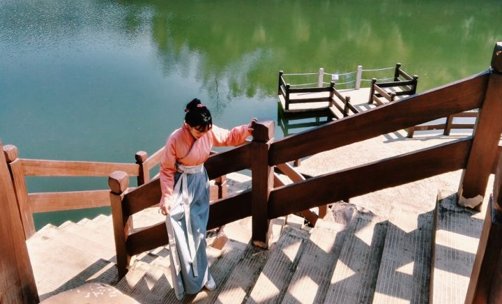
当时我跟他争论了好久。家里人说，别穿了，大家都拿你当怪人看。 然后我倔脾气就上来了，心想反正我脸皮厚，不怕别人怎么看我。 后来到了澳洲留学，一呆就是5年。
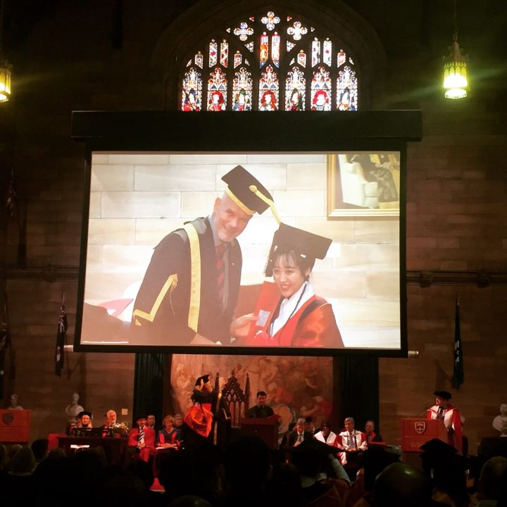
2016年，悉尼大学，我研究生毕业典礼，穿着明制袄裙参加的。一上台老校长就暗戳戳地在我旁边悄悄说：你衣服好漂亮啊，一会儿可以找你拍照吗？我当时愣了至少三秒，后来看录像回放，我都快被自己乐死了。那一瞬间真的是民族自豪感爆满。
毕业完，我又跟家里反着干，好好的工作不要，准备自己在悉尼做汉服相关的行业。为此家里快把我给骂死了。他们认为汉服本来就小众，我竟然还要跑到别人的地盘上去搞。我一开始的方向是在悉尼开一家汉服主题的小面馆。这个想法其实老早就有了，可能是从小读《红楼梦》和武侠小说，所以一直对古人的生活抱有无限的遐想。青楼黛瓦，红砖白墙，山水一色，烟雨朦胧。绾着发髻头戴珠花的少女广袖盈盈，巧笑倩兮，给你斟上一壶桂花甜酒，再端上一盘玲珑剔透的玫瑰糖蒸酥酪。再者，也一直幻想金庸古龙笔下的快意江湖，想象着自己是行走江湖多年的侠客，寻上一家酒肆，红灯笼照着迷途的浪子心，酒幡飞舞，风情万种的老板娘为你满上上好的米酒，让店小二给你切上半斤劲道的酱牛肉，再来碗热气翻腾辣子嫣然的汤面，从舌尖暖到心窝。为了自己这个想法，我花了一整年的时间做市场调查，洋洋洒洒写了近2万字的企划书，蹲点寻找合适的铺面，设计装修风格，甚至连工作服都找重回汉唐定制了。
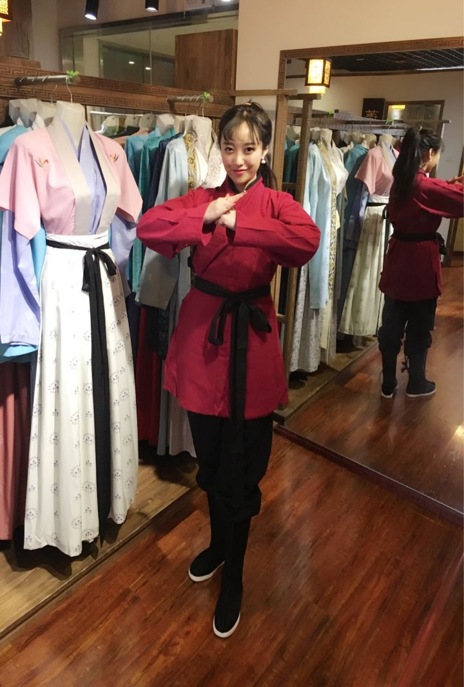
到最后，我们全家都被我这种精神打动了，决定放手让我做。你猜怎么着，没错，每个环节都在出错。厨师撂手不干，嫌澳洲太远。看上的店面全部被人抢先，最可怕的是，我签证不知道怎么回事，出了问题，工作签迟迟不下，在此期间，我拿着过桥签，不能工作，也不能出境，本来说回国亲自上手学，结果只能被困在澳洲。当时真的很绝望，一起毕业的所有的同学都找到了合适的工作，就我是名无业游民。最惨淡的时候，我甚至做起了代购。这样的日子折磨了我很久，本来就闲不下来，现在更是要被这种无聊的日子逼疯掉。在此期间，我实在没有办法，在家捣鼓起了中式糕点。之前没有任何经验的我，从零开始自学。揉面、和面、做造型。每天做不一样的糕点甜品，晚上等朋友们下班后品尝。从小就怕烫怕火的我硬是练出了“铁砂掌”。直到他们跟我说了一句话，你快搞一家糕点店吧，这手艺，差不多到火候了。这才有了“聽月小筑”。
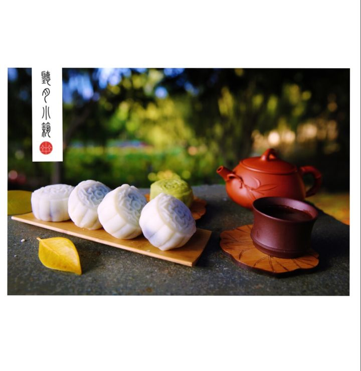“寻找悉尼汉服大使”大型公益比赛
历时三个月，联合另外三家主办方Rolling Monster、悉尼汉服同袍会和安妮缘份慈善基金会，历经海选、初赛、复赛和总决赛。总参与人数超过1000人，总决赛办在悉尼市政厅，观众1200人。个中滋味在此不予言表
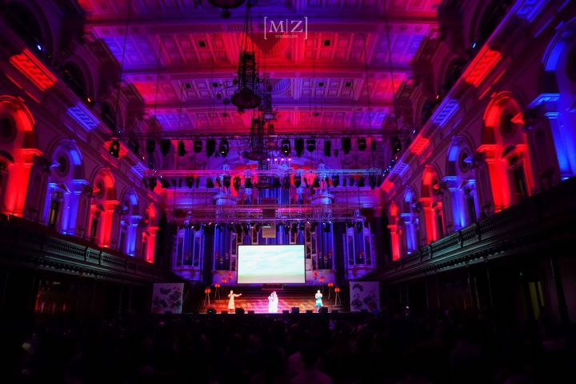
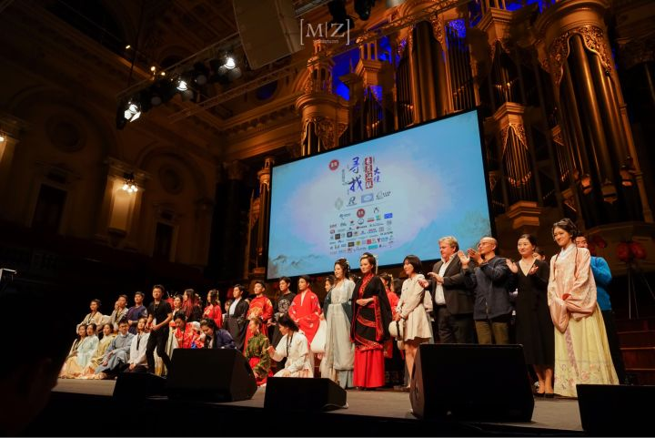
发扬汉服文化

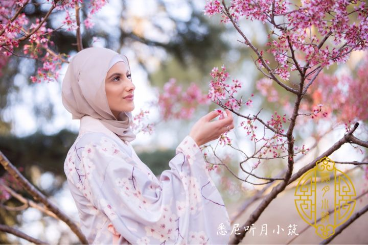
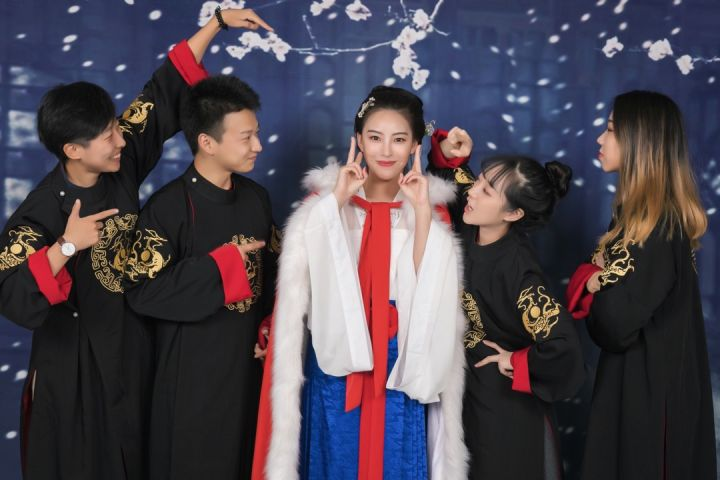
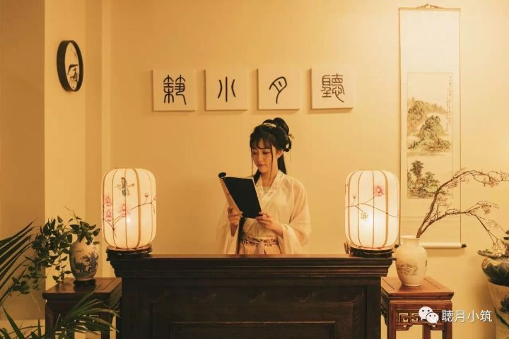
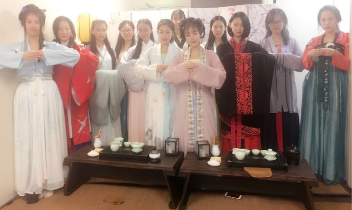
汉服工笔图
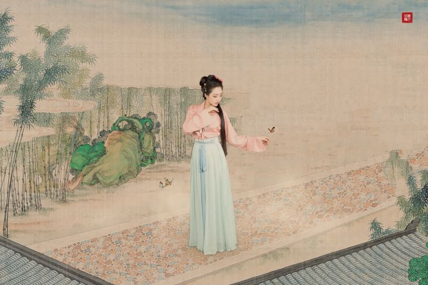
聽月小筑
2016年4月26日，聽月小筑正式跟大家见面，从客服、厨师、送货小哥，没错，当时就我一个人。
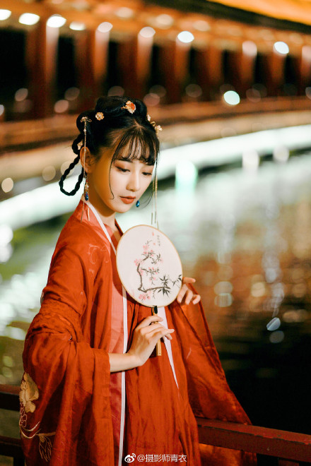
穿着汉服送糕点，成了一大特色。几乎每个客人都会拍照上传朋友圈。走在悉尼大街上，回头率百分之百。其实在国外穿汉服是件很好玩的事，因为大家还是挺友好的，我遇见过很多人，主动要求合影留恋，并真诚地告诉我：衣服太美了！“加上我的包装比较有意思，所以算是一下吸粉不少。我记得当时只有一个工作微信，不到1个月就多了近两千个悉尼本地客户。每个包装盒都是我手绘上去的。
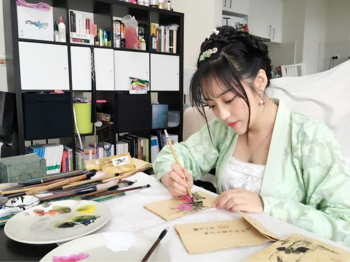
但随之而来也有不少麻烦，最麻烦的就是常常被人拦住，会耽误送货时间。可是如果不跟人合影或者接受提问，又怕给人留下不好的印象。不仅如此，还是会听到不少负面的评论。最常见的四个字莫过于“哗众取宠”。好在团队迅速扩大，我不再是一个人单打独斗。不过，我穿着汉服走在悉尼街头，最大的困扰，便是被80%的路人当作日本人。常常跟身边的人擦肩而过时，便会听到窃窃私语：“Japanese kimono！”最好笑的是，有一次在Central火车站下车，我后面一直跟着三个中国男生，他们大声地议论道：“我跟你打赌前面那个肯定是韩国的！”另一个说：“不不不，是日本的！”“你猜我们说的话她听不听得懂？”“不可能吧，哈哈哈哈哈！”我在前面走着真的很尴尬，特别想转过头跟他们说一句：看清楚了，姐是中国人。最后还是忍住了。心塞塞.......后来我们在悉尼歌剧院、唐人街等繁华地段随机采访了100来个不同肤色不同性别的路人，让他们猜猜我这身衣服是哪个国家的。
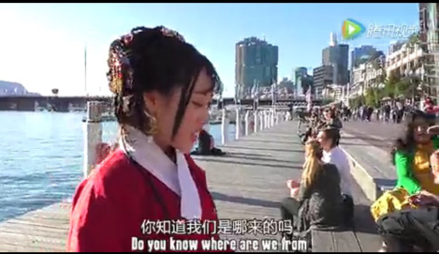
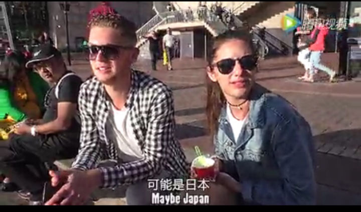
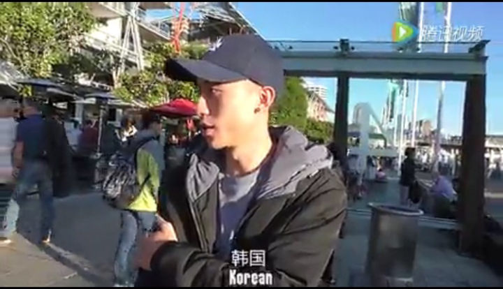
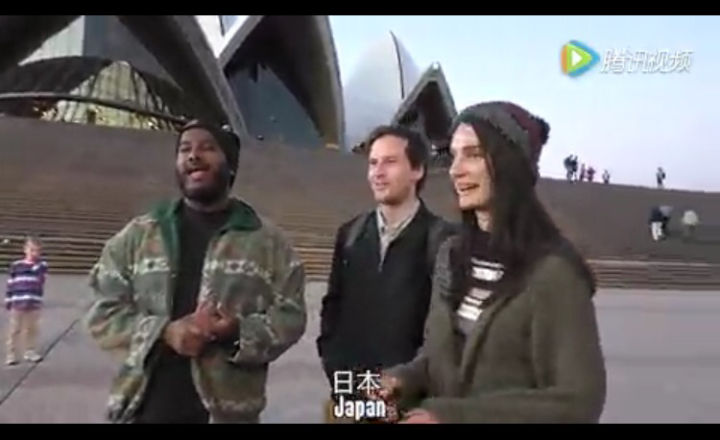
天天穿汉服是一种什么样的体验？
要说体验，一开始被人指指点点时还是会害羞会尴尬。
而今，却练就了一身旁若无人的硬功夫。你要看，随便看。
记得有次回国，在成都的一号线地铁上，对面有个小哥拿着手机悄悄拍我，为什么我知道呢？因为他身后就是窗玻璃反射得一清二楚啊我去！
我看到他拍完后，又打开微信，小声说道：“可惜拍不到正脸。”然后我朝他笑笑，说：“可以拍正脸。”小哥反倒不好意思了：“真的吗？可以拍吗？”我说你拍吧，对着镜头大方笑起来。
小哥说，你人真好。你穿的是汉服对吗？
其实有时候，一点点善意就会让人开心一整天。我曾经也反感别人偷拍我背后议论我，后来一想，我穿汉服，就是让你拍呀，这样宣传力度更大嘛！
说实话，一路走来，其实中间有受到过质疑、批评、诋毁。我一度曾想放弃，想退圈。
然而，还是一咬牙走到了现在。因为汉服，又学会了做设计、做簪子、撸发型和美妆，活生生要把自己搞成十项全能，哈哈哈哈哈！
为何如此执着，只因心中有个梦。
梦里有诗，有酒，有茶，有花。
还有我心中，最美的衣裳。
不忘初心。
穿着汉服弹古筝
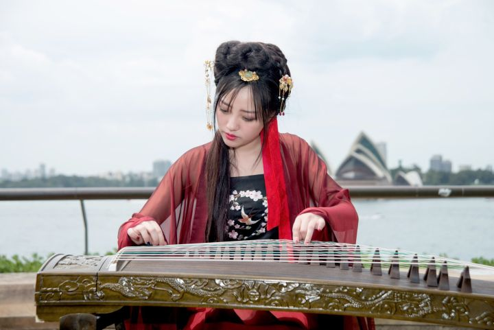
穿着汉服听讲座（重庆）
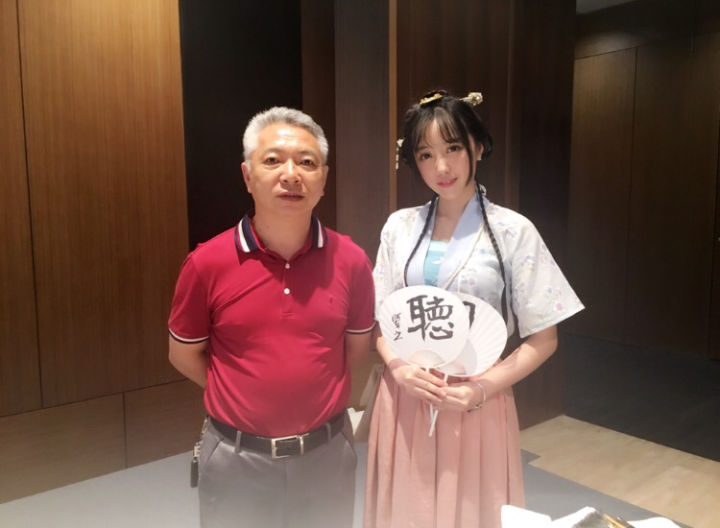
穿着汉服乘地铁（上海）
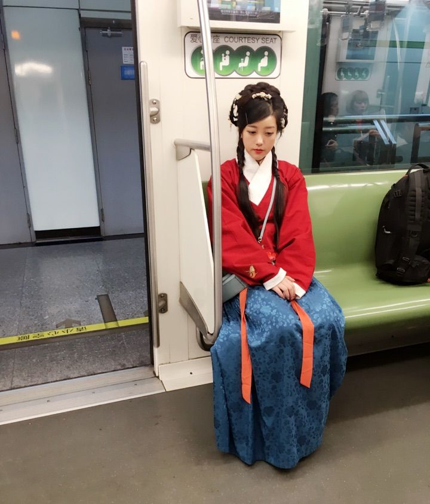
悉尼蓝山，圆我一个武侠梦
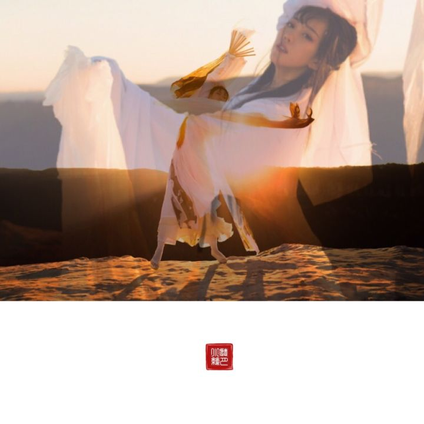
悉尼银河
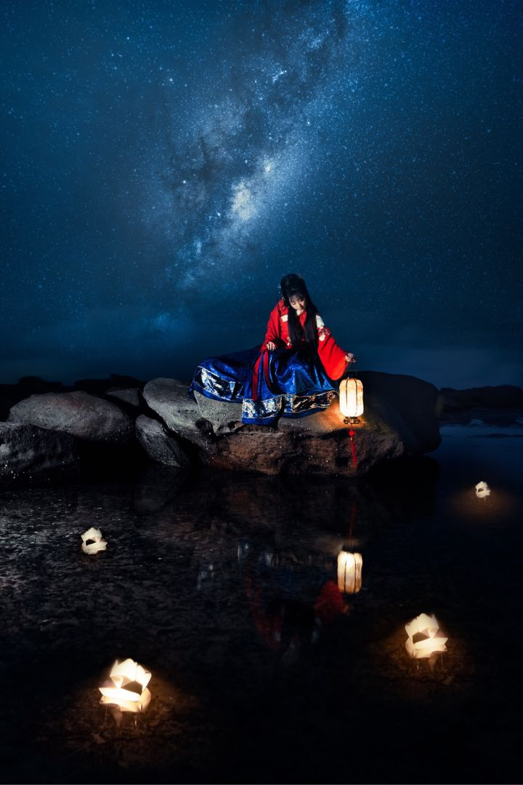